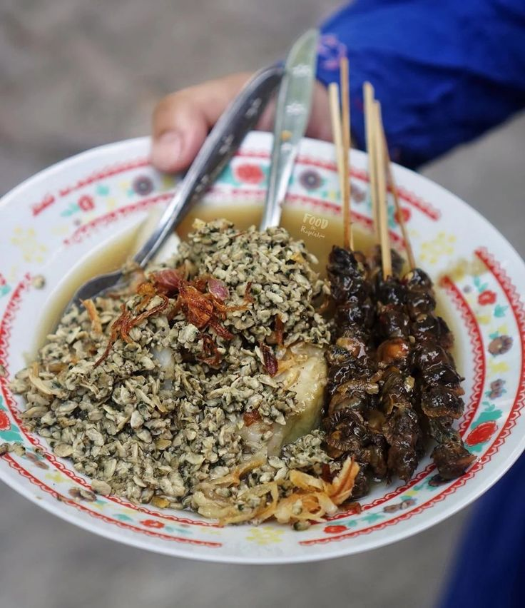

Lontong Kupang
Lontong kupang adalah kuliner khas Surabaya yang berupa irisan lontong dengan kuah kaldu yang disajikan dengan taburan daging kupang. Adapun kupang yang dimaksud adalah nama hewan laut semacam kerang berukuran kecil yang menjadi salah satu bahan sajian tersebut.

Bahan Utama Lontong Kupang
Bahan utama yang digunakan adalah kupang putih (Potamocorbula fasciata), yaitu hewan laut bertubuh lunak (moluska) semacam kerang berukuran kecil sebesar biji jagung. Kupang yang telah dikupas dan dimasak, ditambahkan lontong dan lentho, kemudian diberi kuah petis dan sedikit perasan jeruk nipis. Untuk menghidangkan biasanya dipadukan dengan sate kerang, serta minuman air kelapa muda.

Khasiat Kupang
Kupang juga menjadi sumber asam lemak omega-3 dan omega-6. Kedua asam lemak tersebut berguna menurunkan kadar kolesterol jahat dalam darah. Asam lemak omega-3 dalam kupang mampu menurunkan kadar trigliserida yang berisiko memicu berbagai masalah jantung seperti pengerasan pembuluh arteri dan serangan jantung.
Home